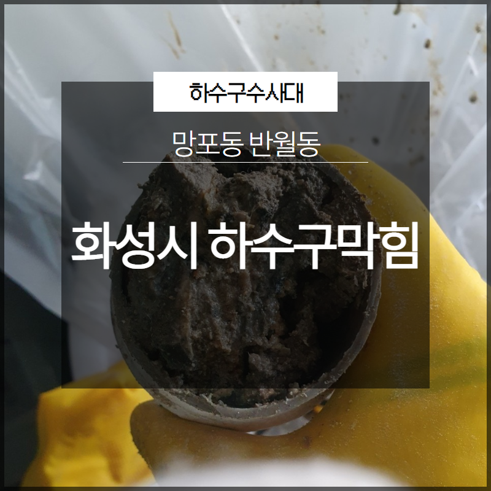
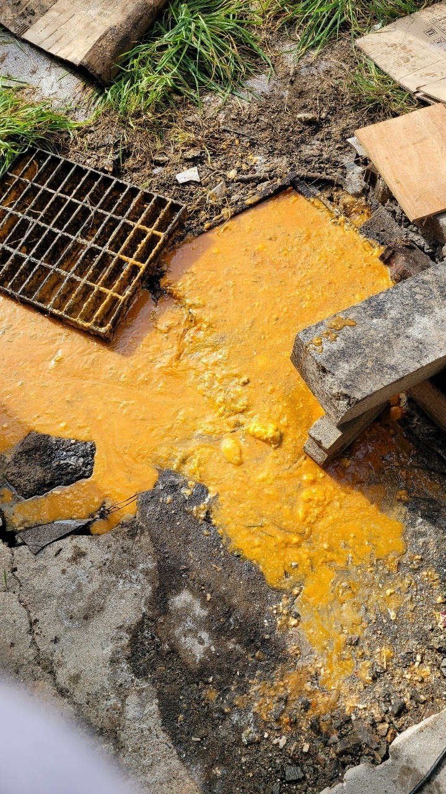
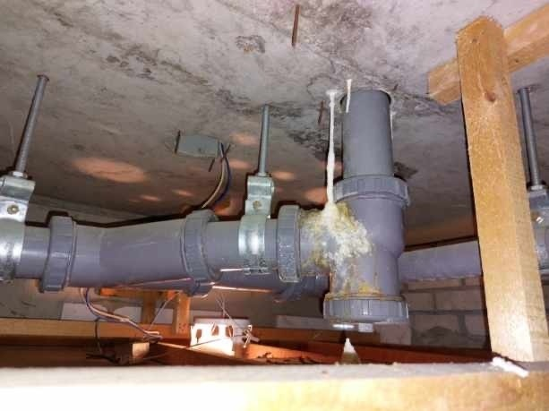
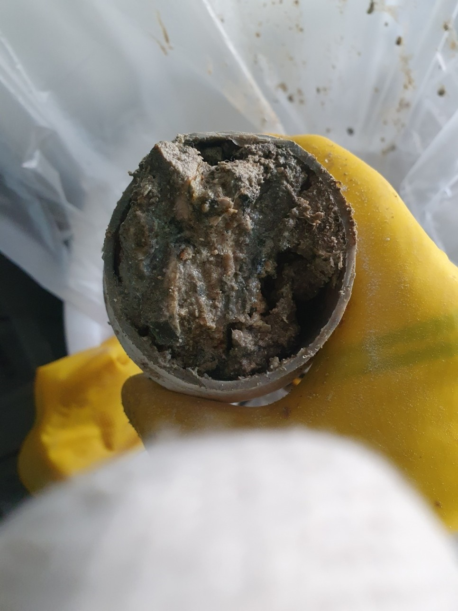
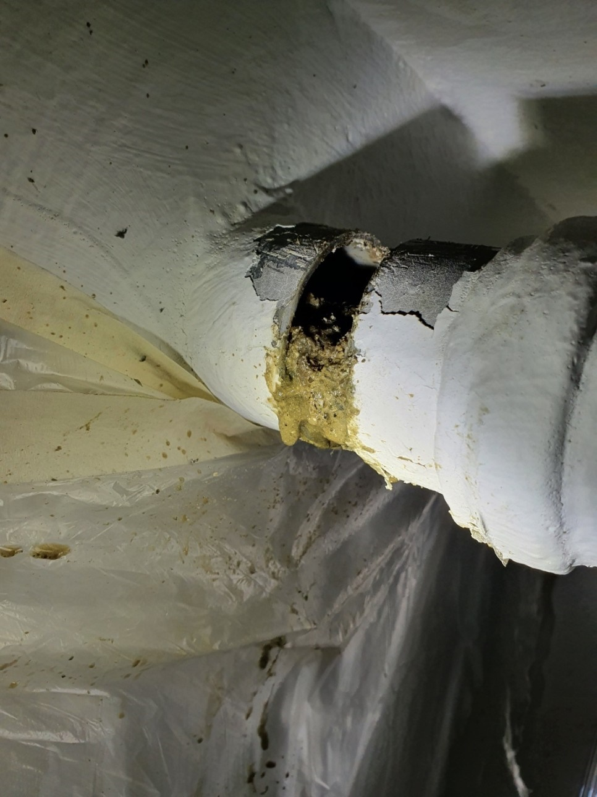
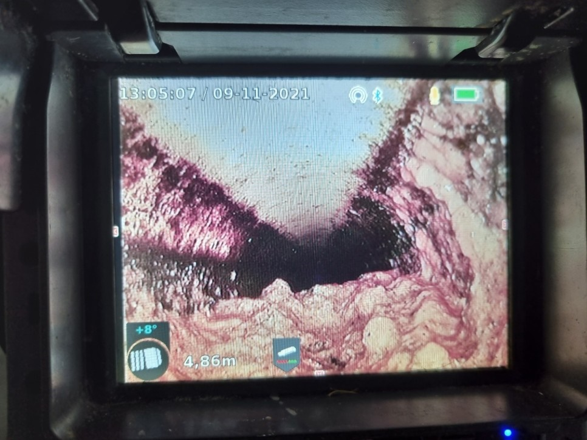

🏠 화성시 망포동 반월동 하수구막힘 역류 고압세척 해결
화성 망포동 하수구막힘 전문 시공 후기

📋 작업 개요
- 위치: 화성 망포동, 망포동, 화성
- 서비스 유형: 하수구막힘, 배관막힘, 역류해결, 뚫는업체, 고압세척
- 작업 일시: 2023. 6. 10. 20:29
- 업체명: 하수구수사대 (010-5615-2118)
🔍 문제 상황
안녕하세요. 하수구수사대입니다.
우리는 평소에 눈에 보이지 않는 것들은 크게 신경을 쓰지 않고 살아가게 되는 것 같습니다. 하지만 일상 속에서 주의를 기울이지 않으면 여러모로 불편함이 발생을 할 수 있는 것들이 있는데요 그중의 하나가 바로 배관 시스템이라고 할 수 있습니다.
배관 같은 경우는 갑자기 막히게 되면 여러 가지로 불편함이 생기게 될 수밖에 없는 곳이기 때문에 갑작스러운 불편함을 줄이기 위해서는 평소에 관심을 가지고 정기적으로 점검을 해주는 것이 필요하다고 할 수 있습니다.
배관 막힘이 발생을 하게 되면

🔎 원인 분석
💡 전문가 진단: 배관 막힘이 발생을 하게 되면
어떤 분들은 당황스러운 마음에 혼자서 해결을 하려고 할 수 있는데요. 하지만 눈에 보이지 않는 배관을 원인을 모른 채로 뚫으려고 하다 보면 제대로 막힘을 해결하지 못하게 되거나 배관 손상으로까지 이어질 수 있는 것입니다.
그러므로 배관 문제는 전문 업체를 통해서 해결을 하시는 것을 추천드립니다. 이번에 의뢰를 받고 방문을 한 현장은 화성시 망포동 반월동 하수구막힘 역류 고압세척으로 진행을 했던 곳이었는데요. 공장 주변에 있는 배관이 막히게 되면서 연락을 주신 곳이었습니다.
매일 운영을 하는 공장이다 보니 잠시라도 배관 막힘이 발생을 하게 되면 영업에도 지장을 받을 수 있기 때문에 빠른 해결을 위해서 현장으로 출동을 하였습니다. 화성시 망포동 반월동 하수구막힘 역류 고압세척 현장을 통해서 배관 막힘이 발생 시에 전문 업체에서는 어떻게 해결을 하게 되는지를 알려드리도록 하겠습니다.
저희 하수구수사대에서는

🔧 작업 과정
배관 막힘이 발생을 하게 되면 먼저 고객과의 자세한 상담을 한 후에 빠르게 방문을 진행해 드리고 있습니다. 매일 사용하는 배관 같은 경우는 잠시만 막히게 되더라도 일상에서 큰 불편한 상황이 발생을 하게 될 수밖에 없는데요.
알게 모르게 유입이 되는 이물질들로 인해서 시간이 지나게 되면 이렇게 갑작스러운 막힘을 유발하게 되는 원인이 될 수 있는 것입니다. 배관 전문 해결 업체 하수구수사대에서는 현장에 방문을 하게 되면 가장 먼저 내부의 상황을 파악하기 위해서 배관 내시경 작업을 시작하게 됩니다.
이번에 방문한 화성시 망포동 반월동 하수구막힘 역류 고압세척 현장의 경우에도 방문을 해서 배관의 내부를 먼저 살펴보았는데요. 본격적으로 배관 내부의 막힘 원인을 파악하기 위한 것으로 어느 현장에서든 내시경 작업은 필수라고 할 수 있습니다.
배관의 내부는 육안으로 볼 수 없기 때문에
내시경을 통해서 막힌 원인을 찾아서 해결을 하는 것이 필요하다고 할 수 있습니다. 이러한 작업은 전문 업체에서만이 장비를 통해서 가능한 것이기 때문에 반드시 전문 업체를 통해서 해결을 하시는 것을 좋다고 할 수 있습니다.
원인을 파악을 한 후에는 배관의 내부에 있는 이물질들을 제거를 하기 위해서 전문 장비를 이용을 하게 되는데요. 배관 내부에는 이물질 덩어리와 각종 기름때들이 배관 벽에도 많이 붙어있는 상황이었습니다.
본격적으로 배관 내부에 있는 이물질들과 배관 벽에 있는 기름때들을 제거하기 위해서 배관 전체적으로 고압세척을 진행하기로 하였는데요. 고압세척 같은 경우는 강한 수압을 이용해서 이물질들을 제거하고 악취까지도 제거할 수 있는 장점이 있습니다. 고압세척 장비는 저희와 같은 전문 업체에서 사용을 할 수 있고 보다 확실한 해결을 할 수 있는 장비입니다.


✅ 작업 완료
반복작업을 하면서 배수관 내부가
깨끗해지는 것을 확인을 하고 마무리하였습니다.




⚠️ 하수구 배관 막힘 예방 및 관리 가이드
- ✅ 머리카락, 비닐, 물티슈 등 물에 분해되지 않는 이물질은 하수구 유입을 절대 금지해 주세요.
- ✅ 하수구 거름망을 씌우고 모여진 이물질은 주기적으로 쓰레기통에 바로 비워주셔야 합니다.
- ✅ 배관 노후가 심할 경우 이물질이 더 쉽게 걸리므로 주기적인 배관 세척(고압세척 등)을 권장합니다.
- ✅ 작업 후 1년 이내 재발 시 하수구수사대에서 무상 A/S 보증 서비스를 제공합니다.
💡 핵심 정리
- 확실한 장비 작업(내시경 점검 및 샤프트 스케일링)으로 원인을 뿌리 뽑습니다.
- 작업 후 1년 이내에 동일한 부위 재발 시 100% 무상 A/S 서비스를 보장합니다.
- 서울 · 경기 · 인천 전 지역에 24시간 언제든 긴급 출동할 수 있도록 항시 대기 중입니다.
❓ 자주 묻는 질문 (FAQ)
🚨 화성 망포동 하수구막힘 문제로 고민이신가요?
정확한 원인 진단과 확실한 시공으로 재발 없는 해결을 약속드립니다.
24시간 긴급 출동 | 서울 · 경기 · 인천 전지역 | 1년 내 재발 시 무상 A/S